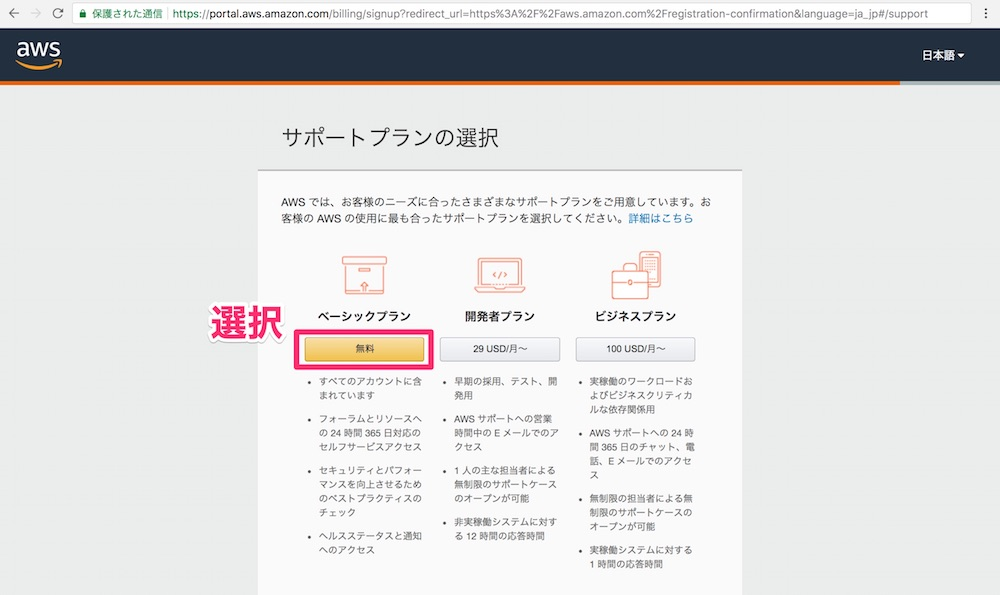

環境構築
AWS Cloud9とは？
Railsの実行環境は、高機能のクラウドIDEであるCloud9を使っていきます。
Cloud9は、ブラウザ上で動作させるIDEで、お手軽に開発を始めることができます。
Cloud9を利用することで、下記のようなメリットを享受できます。
・環境構築不要で開発を始めることができる
・ブラウザさえあれば動作する
・エラーが出た際はシェア機能で手軽にデバッグが可能
・低スペックのPCでも動作する
また、Cloud9はAmazonに買収され、現在はAWSというクラウドサービスの一部になっています。
まずはAWSにアカウント登録することから始めましょう。
AWSの登録
まず、AWSアカウントを作成します。（既にお持ちの方は作業不要です）
①AWSの公式サイトにアクセスして、「今すぐ無料アカウント作成」をクリック
②アカウント作成画面でアカウント情報を入力して「続行」をクリック
※AWSアカウント名はユーザ名のようなもので、後から変更可能
③連絡先情報を入力して「アカウントを作成して続行」をクリック
※アカウントの種類は「パーソナル」を選択
※フルネームや住所は半角英数字で入力
④支払情報を入力して「セキュアな送信」をクリック
※クレジットカードがないとAWSアカウントは作成できません
⑤電話番号情報を入力し、「すぐに連絡を受ける」をクリック
※クリックしたら入力した番号に電話がかかってきます
⑥電話を取って、AWS登録画面に表示された4桁の数字を電話のキーパッドに入力する
⑦入力されたら下記のように表示が変わるので、「続行」をクリック
⑧「ベーシックプラン」の「無料」をクリック

⑨登録完了

Cloud9を使う
①AWS Cloud9にアクセスして、「AWS Cloud9 の使用を開始する」をクリック
②先ほど登録したAWSのメールアドレスとパスワードを入力し、Cloud9へログイン
③「Create environment」をクリックし、新しい環境を作成する
④「環境の名前」「環境の説明(任意)」を入力し、「Next step」をクリック
※これらの情報は後ほど変更可能です
⑤環境設定は特に変更せず、「Next step」をクリック
⑥設定内容を確認し、「Create environment」をクリック
⑦環境セットアップ中（数分かかる場合あり）
⑧環境セットアップ完了
※画面構成について